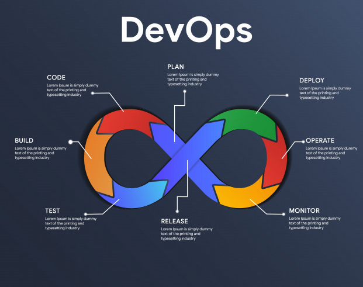

DevOps Model
DevOps is a new method of producing and preserving a system based on the combination of cultural philosophies, practices, and tools that increases an organization’s ability to deliver applications and services at high velocity.

A sumption of the interaction between company and customers.
It aims to shorten the systems development life cycle and provide continuous delivery with high software quality, therefore products evolve and improve at a faster pace than organizations using traditional software development and infrastructure management processes. As a result this methodology enables organizations to better serve their customers and compete more effectively in the market.
How DevOps Works
The steps that are followed by the DevOps methodology.
DevOps Model is actually a modification of agile software methodology, as many aspects came from there. In action now, under a DevOps model, development and operations teams are no longer “seperated”. Sometimes, these two teams are merged into a single team where the engineers work across the entire application lifecycle, from development and test to deployment to operations, and develop a range of skills not limited to a single function.